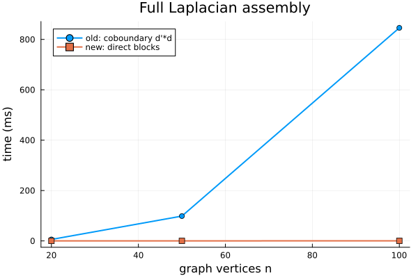
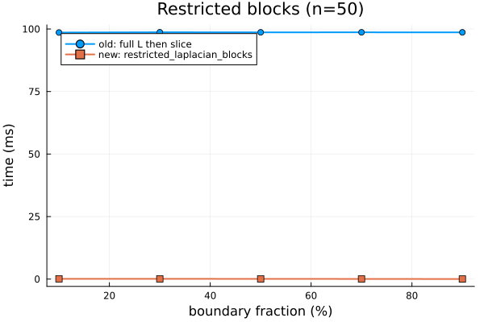
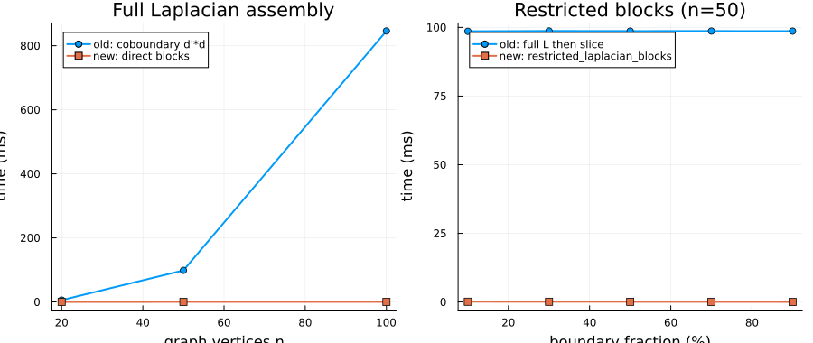

Faster Sheaf Laplacians: Direct Block Assembly
Every time you call sheaf_laplacian_matrix(s) or harmonic_extension(s, ...), the library used to build the full coboundary matrix $d : C^0(F) \to C^1(F)$ — an $(\sum d_e) \times (\sum d_v)$ sparse block matrix — and then multiply $L = d^\mathsf{T} d$. For large sheaves this intermediate matrix dominates both memory and runtime.
This post explains the performance bottleneck, derives an alternative formulation that computes the same result directly from the restriction maps, and shows concrete speedups for two common tasks:
- Assembling the full sheaf Laplacian.
- Solving a boundary-value problem with
harmonic_extension, where only the interior-interior block $L_{II}$ and the interior-boundary block $L_{IB}$ are ever needed.
using CellularSheaves
using Graphs
using LinearAlgebra
using SparseArrays
using Random: MersenneTwister, shuffle
using Printf
using BenchmarkTools
using PlotsThe performance bottleneck
A Euclidean sheaf $F$ on a graph $G = (V, E)$ assigns vector spaces $F(v) = \mathbb{R}^{d_v}$ and $F(e) = \mathbb{R}^{d_e}$ to every vertex and edge, together with restriction maps $\rho_{v \to e} : \mathbb{R}^{d_v} \to \mathbb{R}^{d_e}$. Let $n = \sum_v d_v$ (total vertex DOFs) and $m = \sum_e d_e$ (total edge DOFs).
The coboundary map $d$ is an $m \times n$ block-sparse matrix. The old approach to computing the sheaf Laplacian was:
d = coboundary_map(s) # allocates an m × n matrix
L = d' * d # multiply, producing n × n resultConstructing d requires allocating an $m \times n$ matrix. When the interior is a small fraction of the graph (e.g. a boundary-value problem with 80% boundary vertices), the full $L$ is needlessly expensive: we only need the interior blocks.
The direct block formula
The blocks of $L = d^\mathsf{T} d$ can be computed directly from the restriction maps, edge by edge:
\[L_{u,u} \mathrel{+}= \rho_{u \to e}^\mathsf{T} \rho_{u \to e} \qquad \text{(diagonal block for each incident edge } e\text{)}\]
\[L_{u,v} \mathrel{+}= -\rho_{u \to e}^\mathsf{T} \rho_{v \to e} \qquad \text{(off-diagonal block for adjacent } u, v\text{)}\]
For a boundary-value problem, we additionally skip all edges where both endpoints are boundary vertices, assembling only the $(n_I \times n_I)$ interior block $L_{II}$ and the $(n_I \times n_B)$ coupling block $L_{IB}$. This reduces work from $O(|E| d_{\max}^2)$ to $O(|E_I| d_{\max}^2)$ where $E_I \subseteq E$ contains only edges with at least one interior endpoint.
Building test sheaves
We create a family of sheaves on path graphs of increasing size. Each vertex stalk is $\mathbb{R}^3$ and restriction maps are random $2 \times 3$ matrices (mapping from the vertex stalk to the edge stalk).
function make_test_sheaf(n::Int; seed=42)
rng = MersenneTwister(seed)
g = path_graph(n)
s = EuclideanSheaf{Float64}(fill(3, n))
for e in edges(g)
rm1 = randn(rng, 2, 3)
rm2 = randn(rng, 2, 3)
add_sheaf_edge!(s, src(e), dst(e), rm1, rm2)
end
return s
endmake_test_sheaf (generic function with 1 method)Smoke-check: the two Laplacian formulations are numerically identical.
let s_check = make_test_sheaf(6)
L_old = Array(sheaf_laplacian_matrix(s_check))
L_new = Array(sheaf_laplacian_matrix_direct(s_check))
@assert L_old ≈ L_new "Laplacians must match"
println("✓ sheaf_laplacian_matrix_direct matches sheaf_laplacian_matrix")
end✓ sheaf_laplacian_matrix_direct matches sheaf_laplacian_matrixBenchmark 1 — full sheaf Laplacian assembly
Comparing sheaf_laplacian_matrix (builds d, then d'*d) against sheaf_laplacian_matrix_direct (accumulates blocks edge-by-edge).
sizes = [20, 50, 100]
# Force JIT compilation on a tiny sheaf before timing.
let s0 = make_test_sheaf(5)
sheaf_laplacian_matrix(s0)
sheaf_laplacian_matrix_direct(s0)
end
t_old_full = Float64[]
t_new_full = Float64[]
for n in sizes
s = make_test_sheaf(n)
push!(t_old_full, median(@benchmark(sheaf_laplacian_matrix($s), samples=20, evals=1)).time / 1e6)
push!(t_new_full, median(@benchmark(sheaf_laplacian_matrix_direct($s), samples=20, evals=1)).time / 1e6)
end
println("\nFull Laplacian assembly — median time (ms):")
println(" n | old (d'*d) | direct blocks | speedup")
println("-------|-------------|-----------------|----------")
for (n, t1, t2) in zip(sizes, t_old_full, t_new_full)
@printf(" %4d | %7.3f | %7.3f | %.1f×\n", n, t1, t2, t1/t2)
end
p1 = plot(sizes, t_old_full;
label="old: coboundary d'*d",
marker=:circle, linewidth=2,
xlabel="graph vertices n",
ylabel="time (ms)",
title="Full Laplacian assembly")
plot!(p1, sizes, t_new_full;
label="new: direct blocks",
marker=:square, linewidth=2)
Benchmark 2 — restricted blocks for boundary-value problems
harmonic_extension needs only $L_{II}$ and $L_{IB}$. We fix $n = 50$ vertices and vary the fraction of boundary vertices from 10 % to 90 % to show how the savings grow as the boundary gets larger.
function old_restricted(s, interior, boundary, offsets)
L = sheaf_laplacian_matrix(s)
I_idx = vcat([offsets[v]+1:offsets[v+1] for v in interior]...)
B_idx = vcat([offsets[v]+1:offsets[v+1] for v in boundary]...)
return L[I_idx, I_idx], L[I_idx, B_idx]
end
n_bvp = 50
s_bvp = make_test_sheaf(n_bvp)
offsets_b = [0; cumsum(s_bvp.vertex_stalks)]
perm = shuffle(MersenneTwister(7), 1:n_bvp)
# Warm up
let bnd = perm[1:20], int = sort(setdiff(1:n_bvp, bnd))
old_restricted(s_bvp, int, bnd, offsets_b)
restricted_laplacian_blocks(s_bvp, int, bnd)
end
fractions = [0.1, 0.3, 0.5, 0.7, 0.9]
t_old_bvp = Float64[]
t_new_bvp = Float64[]
for frac in fractions
n_bnd = round(Int, frac * n_bvp)
boundary = sort(perm[1:n_bnd])
interior = sort(setdiff(1:n_bvp, boundary))
push!(t_old_bvp, median(@benchmark(old_restricted($s_bvp, $interior, $boundary, $offsets_b), samples=20, evals=1)).time / 1e6)
push!(t_new_bvp, median(@benchmark(restricted_laplacian_blocks($s_bvp, $interior, $boundary), samples=20, evals=1)).time / 1e6)
end
println("\nRestricted blocks (n=$n_bvp) — median time (ms):")
println(" bnd% | old (full L slice) | new (direct) | speedup")
println("--------|---------------------|----------------|----------")
for (f, t1, t2) in zip(fractions, t_old_bvp, t_new_bvp)
@printf(" %3.0f%% | %7.3f | %7.3f | %.1f×\n", 100 * f, t1, t2, t1/t2)
end
p2 = plot(fractions .* 100, t_old_bvp;
label="old: full L then slice",
marker=:circle, linewidth=2,
xlabel="boundary fraction (%)",
ylabel="time (ms)",
title="Restricted blocks (n=$n_bvp)")
plot!(p2, fractions .* 100, t_new_bvp;
label="new: restricted_laplacian_blocks",
marker=:square, linewidth=2)
Results
Combining both plots:
plot(p1, p2; layout=(1, 2), size=(900, 380))
Key takeaways
Full Laplacian. sheaf_laplacian_matrix_direct is faster than the coboundary-based path because it avoids allocating the intermediate $m \times n$ matrix and performs fewer floating-point operations. The improvement is modest for tiny graphs (overhead dominates) but grows with sheaf size.
Restricted blocks. The gain from restricted_laplacian_blocks is larger and more striking: as the boundary fraction rises, an increasing fraction of edges are skipped entirely. At 80% boundary, $\sim 64\%$ of edges connect two boundary vertices and are skipped, while the full-L approach always pays the cost of the entire matrix.
Both new functions are drop-in replacements that produce numerically identical output to the old code. harmonic_extension and nullspace_ldlt have been updated to use them internally.